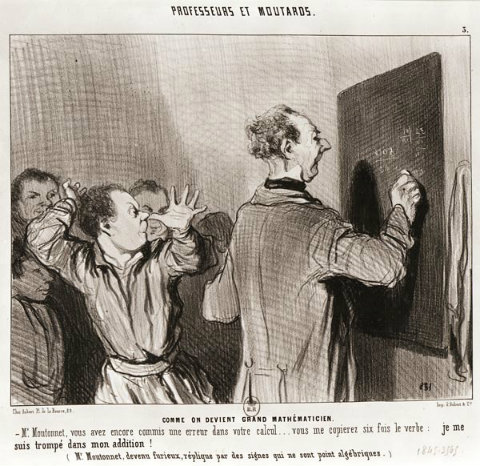

Surprenantes statistiques liées aux crimes français interprétées par Jean- Baptiste Croizet !
Un rapport fut présenté par Jean-Baptiste Croizet en août 1829, à l’académie des sciences, belles lettres et arts de Clermont-Ferrand. L’étude avait été menée par Balbi et Guerry sur trois années de 1825 à 1827, ayant pour titre « statistique comparée du nombre des crimes et de l’état de l’instruction, dans les divers arrondissements des cours royales et des académies de France », les données avaient été fournies par le ministère de la justice. Elle était composée de trois cartes, fixées sur un tableau. -Le premier indiquait, le nombre de condamnés pour crimes contre les personnes (meurtres ou violence) dans chaque cour royale. -Le second, le rapport du nombre de condamnés pour crimes contre les propriétés (vols). -Enfin, le troisième, le nombre d’écoliers par rapport au nombre d’habitants.

Pour le 1er tableau si on croit ces deux auteurs, les villes où il « faisait bon vivre » sont : - Amiens : 1 crime pour 72466 habitants - Limoges : 1 crime pour 72466 habitants - Paris : 1 crime pour 57057 habitants, etc… A l’opposé : - Bastia : 1 crime pour 2968 habitants - Nîmes et Bourges : 1crimes pour 18000 habitants, etc…
Pour le 2ème tableau, nous trouvons les villes avec le moins de personnes impliquées dans les vols par habitants : - Riom : 1 personne pour 38214 habitants - Limoges : 1 personne pour 20183 habitants - Agen : 1 personne pour 17000 habitants, etc… A l’inverse : - Paris : 1 personne sur 4075 habitants - Rouen : 1 personne sur 5000 habitants, etc…
En regroupant le nombre de condamnés dans chaque cour pour crimes contre les personnes (1er tableau) et les propriétés (2ème tableau) par habitants, les mauvais élèves sont : - Bastia : 1 personne sur 2200 habitants - Paris : 1 personne sur 3500 habitants - Rouen : 1 personne sur 5600 habitants - Colmar : 1 personne sur 5600 habitants - Orléans : 1 personne sur 6800 habitants, etc… Au contraire : - Bourges : 1 personne sur 11000 habitants - Riom : 1 personne sur 12800 habitants - Limoges : 1 personne sur 15600 habitants, etc…
Pour le 3ème tableau, l’éducation à travers le nombre d’écoliers est dressée. Ici, nous retrouvons les villes comptant le plus grand nombre d’écoliers par habitants. - Besançon, Amiens, Nancy : 1 élève pour 11.6 habitants - Dijon, Metz, Colmar (Strasbourg) : 1élève pour 13 habitants - Douai : 1 élève pour 14 habitants - Paris : 1 élève pour 15 habitants - Riom (Clermont-Ferrand) 1 élève pour 16 habitants, etc... Les académies regroupant le moins d’élèves étaient: - Rennes : 1 élève pour 96 habitants - Limoges : 1 élève pour 88 habitants - Bourges : 1 élève pour 66 habitants - Angers : 1 élève pour 57 habitants - Bordeaux : 1 élève sur 55 habitants - Aix-en-Provence : 1élève sur 49 habitants
Conclusion de Jean Baptiste Croizet : « En jetant un coup d’œil sur ces trois cartes, on voit que la plupart des teintes les plus obscures sont, dans la première, au Sud-Est de la France. Dans la seconde, au Nord et dans la troisième à l’Ouest ». Mais, il reconnait aussi « que ce tableau peut fournir de matière à mille réflexions diverses ; chacun l’interprétera sans doute suivant ses opinions, et peut-être ses préjugés ». Il émet des réserves sur ce rapport, pas assez de recul (3ans) « difficile d’en déduire des conséquences, et surtout de les donner comme certaines, ce ne sera qu’après une longue expérience, que l’on pourra par rapport aux crimes contre les personnes et les propriétés, porter un jugement plus équitable sur les départements qui composent chaque cour royale ». Il fait aussi remarquer que sur la question de l’instruction « Il existe, dans les campagnes surtout, plusieurs instituteurs qui ne sont pas autorisés par l’académie dont ils dépendent, et que leurs élèves ne sont par conséquent pas connus au ministère de l’instruction publique », ce qui fausse évidemment l’ensemble des statistiques dans chaque département. Il remarque aussi à juste titre que le nombre de crimes contre les personnes semble diminuer à mesure que l’instruction est plus étendue ; que les crimes contre les propriétés (vols) sont plus fréquents dans les villes où l’opulence la plus honteuse, se trouve placée à côté de l’extrême misère, où tout suscite la convoitise. Quant à Jean-Baptiste Croizet, il avait bien compris afin d’obtenir une interprétation juste, dans ce premier tiers du 19ème siècle, que pour avoir des statistiques fiables, il fallait tenir compte de plusieurs critères : La durée dans le temps Une collecte d’informations sur l’ensemble des parties prenantes Bien connaître les phénomènes humains qui nous entourent Être le plus précis dans les commentaires des résultats en ayant un esprit critique.